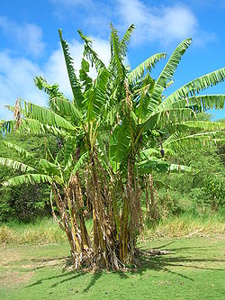

Tentang buah.com

Pisang

Pisang adalah nama umum yang diberikan pada tumbuhan terna raksasa berdaun besar memanjang dari suku musaceae. Beberapa jenisnya (Musa acuminata, M. balbisiana, dan M. ×paradisiaca) menghasilkan buah konsumsi yang dinamakan sama. Buah ini tersusun dalam tandan dengan kelompok-kelompok tersusun menjari yang disebut sisir. Hampir semua buah pisang memiliki kulit berwarna kuning ketika matang, meskipun ada beberapa yang berwarna jingga, merah, hijau, ungu, atau bahkan hampir hitam. Buah pisang sebagai bahan pangan merupakan sumber energi (karbohidrat) dan mineral, terutama kalium.
Perlu disadari, istilah "pisang" juga dipakai untuk sejumlah jenis yang tidak menghasilkan buah konsumsi, seperti pisang abaka, pisang hias, dan pisang kipas. Artikel ini hanya membahas pisang penghasil buah konsumsi serta kerabatnya yang berkaitan.
Pisang adalah nama umum yang diberikan pada tumbuhan terna raksasa berdaun besar memanjang dari suku Musaceae. Beberapa jenisnya (Musa acuminata, M. balbisiana, dan M. ×paradisiaca) menghasilkan buah konsumsi yang dinamakan sama. Buah ini tersusun dalam tandan dengan kelompok-kelompok tersusun menjari yang disebut sisir. Hampir semua buah pisang memiliki kulit berwarna kuning ketika matang, meskipun ada beberapa yang berwarna jingga, merah, hijau, ungu, atau bahkan hampir hitam. Buah pisang sebagai bahan pangan merupakan sumber energi (karbohidrat) dan mineral, terutama kalium.
Perlu disadari, istilah "pisang" juga dipakai untuk sejumlah jenis yang tidak menghasilkan buah konsumsi, seperti pisang abaka, pisang hias, dan pisang kipas. Artikel ini hanya membahas pisang penghasil buah konsumsi serta kerabatnya yang berkaitan.
Budi daya
Pisang secara tradisional tidak dibudidayakan secara intensif. Hanya sedikit yang dibudidayakan secara intensif dan besar-besaran dalam perkebunan monokultur, seperti 'Gros Michel' dan 'Cavendish'. Jenis-jenis lain biasanya ditanam berkelompok di pekarangan, tepi-tepi lahan tanaman lain, serta tepi sungai.
Daftar Harga
| Jenis Pisang | Harga | |
|---|---|---|
| Per Kilo | Per Biji | |
| Pisang Tanduk | Rp. 50.000,00 | Rp. 5000,00 |
| Pisang Susu | Rp. 60.000,00 | Rp. 6000,00 |
| Pisang Raja | Rp. 70.000,00 | Rp. 7000,00 |
| Pisang Cavendish | Rp. 85.000,00 | Rp. 8500,00 |